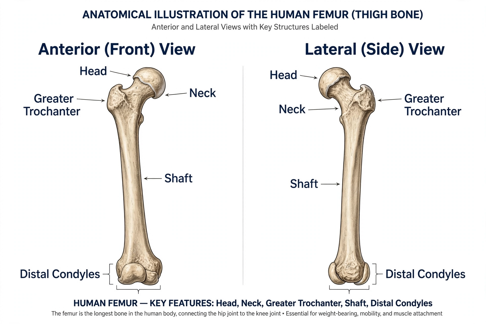

The femur (pl. femurs or femora), or thigh bone, is the only bone in the thigh and the longest, strongest and (by some measures) heaviest bone in the human body. It extends from the hip to the knee, transmitting body weight from the pelvis to the tibia.

Proximally, the spherical head fits into the hip socket (acetabulum), joined by the angled neck to the shaft; the greater and lesser trochanters anchor powerful muscles such as the gluteals. The long, slightly bowed shaft bears the linea aspera ridge at the back for muscle attachments. Distally, the medial and lateral condyles roll on the tibia to form the knee joint, with the patellar surface between them in front.
The femur's obliquity brings the knees under the body's centre of gravity for bipedal walking. Despite its strength it can fracture in high-energy trauma; fractures of the femoral neck (“broken hip”) are common in elderly people with osteoporosis and are a major cause of morbidity. Forensic anthropologists estimate stature from femoral length.
All tetrapods have femora; in many animals the bone is held more horizontally, and in birds and bats it is a key element of flight-related posture.
Recreated from memory.